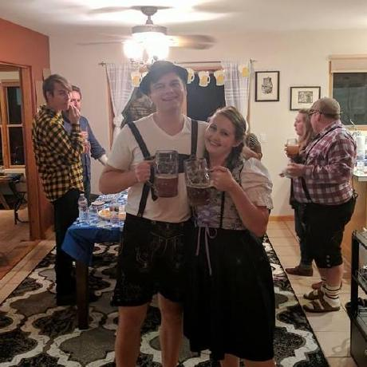

-
Updated
26 days ago - Java
#
Java

Java was originally developed as an alternative to the C/C++ programming languages. It is now mainly used for building web, desktop, mobile, and embedded applications. Java is owned and licensed through Oracle, with free and open source implementations available from Oracle and other vendors.
Here are 137,760 public repositories matching this topic...
「Java学习+面试指南」一份涵盖大部分 Java 程序员所需要掌握的核心知识。准备 Java 面试，首选 JavaGuide！
-
Updated
2 hours ago - Java
Design patterns implemented in Java
java
snippets
design-patterns
principles
awesome-list
hacktoberfest
snippets-library
snippets-collection
-
Updated
22 hours ago - Java
java
redis
elasticsearch
distributed-systems
spring-cloud
zookeeper
rpc
message-queue
high-availability
hystrix
ribbon
eureka
microservices-architecture
feign
high-concurrency
dubbo
advanced-java
distributed-search-engine
springcloud-config
doocs
-
Updated
2 days ago - Java
Everything you need to know to get the job.
java
algorithm
algorithms
leetcode
interview
interviews
interview-practice
algorithm-competitions
leetcode-solutions
interview-questions
technical-coding-interview
algorithm-challenges
coding-interviews
coding-challenge
leetcode-questions
coding-challenges
leetcode-java
interview-prep
interview-preparation
coding-interview
-
Updated
3 days ago - Java
mall项目是一套电商系统，包括前台商城系统及后台管理系统，基于SpringBoot+MyBatis实现，采用Docker容器化部署。 前台商城系统包含首页门户、商品推荐、商品搜索、商品展示、购物车、订单流程、会员中心、客户服务、帮助中心等模块。 后台管理系统包含商品管理、订单管理、会员管理、促销管理、运营管理、内容管理、统计报表、财务管理、权限管理、设置等模块。
mysql
java
docker
redis
elasticsearch
spring
spring-boot
mongodb
rabbitmq
spring-cloud
elk
spring-security
swagger-ui
springboot
mybatis
springcloud
-
Updated
3 hours ago - Java
RxJava – Reactive Extensions for the JVM – a library for composing asynchronous and event-based programs using observable sequences for the Java VM.
-
Updated
3 hours ago - Java
LeetCode Solutions: A Record of My Problem Solving Journey.( leetcode题解，记录自己的leetcode解题之路。)
javascript
python
java
computer-science
tree
algorithm
leetcode
cpp
interview
data-structures
maximum-sum
-
Updated
14 days ago - JavaScript
All Algorithms implemented in Java
search
java
algorithms
wiki
reference
interview
sort
sorting-algorithms
interview-questions
implementation
algorithm-challenges
hacktoberfest
algorithms-implemented
algorithms-datastructures
-
Updated
27 minutes ago - Java
A powerful 🚀 Android chart view / graph view library, supporting line- bar- pie- radar- bubble- and candlestick charts as well as scaling, panning and animations.
-
Updated
on 21 Jun - Java
ZXing ("Zebra Crossing") barcode scanning library for Java, Android
-
Updated
10 days ago - Java
Alibaba Java Diagnostic Tool Arthas/Alibaba Java诊断利器Arthas
-
Updated
1 hour ago - Java
mateuszkwiecinski
commented
on 2 Nov 2020
Description
When using leakcanary with android-test 1.3.1-alpha02 ui test suite always pass.
Using alpha version is required due to android/android-test#743 but in case when it gets into stable release more people will face the issue
Steps to Reproduce
Sample project that has test suite passing despite it shouldn't
https://github.com/mateuszkwiecinski/or
-
Updated
27 days ago - Java
about learning Spring Boot via examples. Spring Boot 教程、技术栈示例代码，快速简单上手教程。
java
docker
spring
spring-boot
mongodb
thymeleaf
rabbitmq
scheduler
spring-cloud
springboot
mybatis
spring-data-jpa
fastdfs
springcloud
docker-composer
spring-boot-mongodb
spring-boot-mail
spring-boot-examples
spring-boot-upload-file
springboot-shiro
-
Updated
on 14 Jun - Java
「企业级低代码平台」前后端分离架构SpringBoot 2.x，SpringCloud，Ant Design&Vue，Mybatis-plus，Shiro，JWT。强大的代码生成器让前后端代码一键生成，无需写任何代码! 引领新的开发模式OnlineCoding->代码生成->手工MERGE，帮助Java项目解决70%重复工作，让开发更关注业务，既能快速提高效率，帮助公司节省成本，同时又不失灵活性。
java
admin
spring
spring-boot
vue
spring-cloud
codegenerator
antd
springboot
mybatis
shiro
activiti
ant-design
springcloud
low-code
jbpm
jeecg
ant-design-vue
jeecgboot
jeecg-boot
-
Updated
4 days ago - Java
A fast JSON parser/generator for Java.
android
java
serialization
json
json-serialization
deserialization
json-parser
fastjson
json-serializer
best-performance
-
Updated
11 days ago - Java
微信开发 Java SDK ，支持包括微信支付，开放平台，小程序，企业微信，公众号等的后端开发
java
sdk
open
weixin
wechat
weapp
mp
wechat-sdk
hacktoberfest
cp
weixin-sdk
miniapp
wxpay
miniprogram
wxjava
-
Updated
19 hours ago - Java
该项目已成功集成 actuator(监控)、admin(可视化监控)、logback(日志)、aopLog(通过AOP记录web请求日志)、统一异常处理(json级别和页面级别)、freemarker(模板引擎)、thymeleaf(模板引擎)、Beetl(模板引擎)、Enjoy(模板引擎)、JdbcTemplate(通用JDBC操作数据库)、JPA(强大的ORM框架)、mybatis(强大的ORM框架)、通用Mapper(快速操作Mybatis)、PageHelper(通用的Mybatis分页插件)、mybatis-plus(快速操作Mybatis)、BeetlSQL(强大的ORM框架)、upload(本地文件上传和七牛云文件上传)、redis(缓存)、ehcache(缓存)、email(发送各种类型邮件)、task(基础定时任务)、quartz(动态管理定时任务)、xxl-job(分布式定时任务)、swagger(API接口管理测试)、security(基于RBAC的动态权限认证)、SpringSession(Session共享)、Zookeeper(结合AOP实现分布式锁)、RabbitMQ(消息队列)、Kafka(消息队列)、websocket(服务端推送监控服务器运行信息)、socket.io(聊天室)、ureport2(中国式报表)、打包成war文件、集成 ElasticSearch(基本操作和高级查询)、Async(异步任务)、集成Dubbo(采用官方的starter)、MongoDB(文档数据库)、neo4j(图数据库)、docker(容器化)、JPA多数据源、Mybatis多数据源、代码生成器、GrayLog(日志收集)、JustAuth(第三方登录)、LDAP(增删改查)、动态添加/切换数据源、单机限流(AOP + Guava RateLimiter)、分布式限流(AOP + Redis + Lua)、ElasticSearch 7.x(使用官方 Rest High Level Client)、HTTPS、Flyway(数据库初始化)、UReport2(中国式复杂报表)。
-
Updated
24 days ago - Java
9
KOLANICH
commented
on 11 Jan 2019
Sometimes it is needed to store compressed data in the DB. Unfortunately not all the DBs have built-in compression and FUSE compressed FSes are not available for every OS. So it may make sense to store compressed binary blobs in the DB.
Unfortunately when one sees them in DBeaver he sees them compressed, but often they are needed uncompressed. So it'd be nice to have a feature to decompress the
To Be Top Javaer - Java工程师成神之路
-
Updated
15 days ago - Java
yuripourre
commented
on 10 Oct 2020
It may be a specific request but since there is a zip file handler for Android, doesn't hurt to ask for a desktop (maybe multiple backends?) implementation.
I would like to try that in the future but if anyone has time before feel free to do it.
Similar
9
JHipster is a development platform to quickly generate, develop, & deploy modern web applications & microservice architectures.
react
java
docker
kubernetes
angular
cloud
webpack
generator
spring-boot
yeoman-generator
jhipster
hacktoberfest
-
Updated
1 hour ago - JavaScript
Jenkins automation server
java
jenkins
groovy
devops
pipelines-as-code
continuous-integration
continuous-delivery
continuous-deployment
cicd
hacktoberfest
-
Updated
4 hours ago - Java
Microsoft Cognitive Toolkit (CNTK), an open source deep-learning toolkit
python
java
c-sharp
c-plus-plus
machine-learning
deep-neural-networks
deep-learning
neural-network
cntk
distributed
highlight
cognitive-toolkit
-
Updated
on 8 Sep 2020 - C++
Redisson - Redis Java client with features of In-Memory Data Grid. Over 50 Redis based Java objects and services: Set, Multimap, SortedSet, Map, List, Queue, Deque, Semaphore, Lock, AtomicLong, Map Reduce, Publish / Subscribe, Bloom filter, Spring Cache, Tomcat, Scheduler, JCache API, Hibernate, MyBatis, RPC, local cache ...
java
map
redis
set
list
queue
executor
cache
scheduler
redis-cluster
lock
session
tomcat
distributed
redis-client
hibernate
mapreduce
distributed-locks
spring-cache
-
Updated
1 hour ago - Java
13567436138
commented
on 23 Apr
Issue Description
update sentinel-cluster-server-envoy-rls to envoy v3 api
Type: bug report or feature request
Describe what happened

clarkzinzow
commented
7 days ago
Apache Arrow has a first-class tabular file format, Feather, that the Ray Datasets IO layer should support. Combined with Ray Datasets' existing .from_arrow() and .to_arrow() APIs, this would round out our "all-Arrow" experience, which should be as nice as possible given our "distributed Arrow dataset" positioning.
Implementation Note
FlatBuffers: Memory Efficient Serialization Library
javascript
python
c
java
go
c-sharp
rust
c-plus-plus
serialization
typescript
protobuf
cross-platform
flatbuffers
zero-copy
marshalling
grpc
rpc
json-parser
mmap
serialization-library
-
Updated
5 hours ago - C++
CAT 作为服务端项目基础组件，提供了 Java, C/C++, Node.js, Python, Go 等多语言客户端，已经在美团点评的基础架构中间件框架（MVC框架，RPC框架，数据库框架，缓存框架等，消息队列，配置系统等）深度集成，为美团点评各业务线提供系统丰富的性能指标、健康状况、实时告警等。
-
Updated
4 days ago - Java
wildmaples
commented
on 18 Jun
Feature request
Please include the following information:
Is your feature request related to a problem? Please describe.
We're looking into optimising keyword arguments in TruffleRuby and need a way to benchmark methods without the inlining mechanism.
Describe the solution you'd like.
Looking for something we can use when running, e.g. `jt ruby --engine.ExcludeInline fo
光 HikariCP・A solid, high-performance, JDBC connection pool at last.
-
Updated
10 days ago - Java
This is a sample app that is part of a series of blog posts I have written about how to architect an android application using Uncle Bob's clean architecture approach.
android
java
android-development
android-application
android-architecture
architectural
android-cleanarchitecture
-
Updated
15 days ago - Java
Modern Java - A Guide to Java 8
-
Updated
on 11 Jun - Java
-
Updated
on 17 Jun - Java
A static analyzer for Java, C, C++, and Objective-C
-
Updated
3 days ago - OCaml
The IK Analysis plugin integrates Lucene IK analyzer into elasticsearch, support customized dictionary.
-
Updated
3 days ago - Java
leventyalcin
commented
on 20 Jan
Hi,
I was trying to install logstash on Amazon Linux 2. After installing it, I couldn't start/enable the service. After some debugging, I noticed the systemd configuration installed by /usr/share/logstash/bin/system-install. However, I do my tests and development mostly on AWS t3.nano and this binary is memory intensive and won't work on low memory.
The exit code could have been checked
A Java 8+ Jar & Android APK Reverse Engineering Suite (Decompiler, Editor, Debugger & More)
android
java
bytecode
compiler
jsp
static-analysis
java-decompiler
decompiler
apk
war
smali
bytecode-viewer
dex2jar
fernflower
cfr
baksmali
procyon
recompiler
krakatau
-
Updated
13 hours ago - Java
Created by James Gosling
Released May 23, 1995
- Website
- www.oracle.com/technetwork/java/javase/overview/index.html
- Wikipedia
- Wikipedia
We should ignore java.io.tmpdir and override it with ES_TMPDIR. I think that variable should be taken into account from the beginning of startup scripts (including JavaVersionChecker) and the value should be applied as java option to all java processes.
Java processes started before ES_JAVA_OPTS are parsed (JavaVersionChecker, TempDirectory, JvmOptionParser) can also create temporary files in /